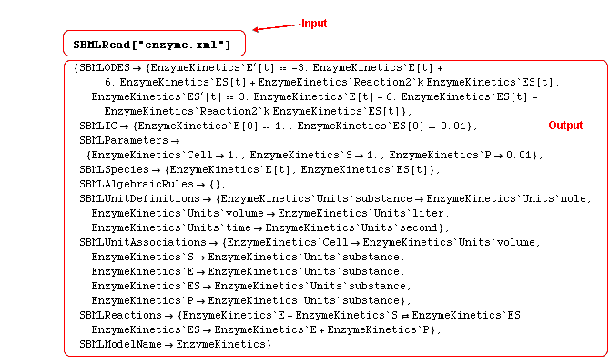

SBMLRead Return Value
Return Value | Options | Variable Names and Scoping | ExamplesSBMLRead reads an SBML file and translates it into a Mathematica data structure consisting of Mathematica differential and/or algebraic equations, intitial conditions, a list of variables, and replacement rules for parameters.
SBMLRead can also be used to generate an interpretive listing of the SBML file, and/or to automatically generate calls to SBMLNDSolve and SBMLPlot subsequent to reading the SBML file.
Return Value
The return value of SBMLRead is a Mathematica rule list of the following form:
{
SBMLODES -> list of differential equations,
SBMLParameters -> list of parameter rules,
SBMLIC -> list of initial conditions,
SBMLSpecies -> list of variables,
SBMLAlgebraicRules -> list of algebraic rules,
SBMLUnitDefinitions -> list of unit definitions,
SBMLUnitAssociations -> list of unit associations,
SBMLReactions -> list of reactions,
SBMLFunctions -> list of pure function defintions,
SBMLNameIDAssociations -> list of id/name associations,
SBMLEvents -> list of events,
SBMLModelName -> name of the model,
SBMLNumericalSolution -> numerical solution
}
By default, all of this information is returned. If a model does not have a particular feature, for example, if it does nto have any functions, then the corresponding field is returned as a null list, e.g., as SBMLEvents->{}. However, the user is allowed to inhibit return of any portions of this information by using the return option to SBMLRead. Several of the fields (SBMLFunctions, SBMLNameIDAssociations, SBMLEvents) are only returned in SBML Level 2.
These return files are perhaps best illustrated with an example. Suppose that the file enzyme.xml contains the following model:

Then a mathematica session will look like this:

Some of the fields such as SBMLAlgebraicRules point to empty lists because there are no such objects in this model; ot her fields are absent, such as SBMLEvents, because this model is expressed in SBML Level 1, which does not have events. For an explanation of the funny identifier names, namely the addition of strings like EnzymeKinetics` to the front of each identifier, see the web page on contexts in MathSBML.
The list of variables has the form
{var1[t], var2[2],...}
where each of var1, var2, ...
are variables that are governed by rate laws in the SBML models; i.e., any species, parameter, or compartment that is
described by a rate law in a rule, and species that are either products or reactants in reactions,
and are not boundary conditions. Each species in the SBML model is translated into a time-dependent function in the
Mathematica model. In level 2, the "id" field is used to identify the variable. In level 1, the "name" field is used.
The global variable (i.e., in the Mathematica context Global`) t is reserved for time. It is anticipated that in future releases of MathSBML the name and context of the time variable can be reassigned at the user's direction. In contrast to the SBML specification, SBMLRead does not yet make use of the csymbol for time; this will also be corrected in future versions.
The list of differential equations has the form
{var1'[t] == expression1, var2'[t] == expression2, ... }
where each of
expression1, expression2, ...
are Mathematica expressions formed by applying all of the rules and reactions that affect that corresponding species.
In level 2, the "id" field is used to identify all variables and constants in the expression. In level 1, the "name" field is used.
The list of parameter rules has the form
{par1 -> expression1, par2 -> expression2, ... }
where each of
par2, par2, ...,
are constant parameters or variable parameters described by scalar type ParameterRules;
compartments with volumes that
are either fixed or described by scalar type CompartmentVolumeRules;
species that are described by scalar type
SpeciesConcentrationRules;
or species that are boundary condtions.
Each of
expression1, expression2, ...
are either constants (for fixed values) or algebraic expressions that give the value of the parameter.
It is possible for the same parameter to be listed more than once in this list if the same local parameter name
is used in multiple reactions.
The parameters are listed in the same order in which they are defined in the SBML model. In level 2, the
"id" field is used to identify the
parameter. In level 1, the "name" field is used.
The list of initial conditions has the form
{var1[0] == value1, var2[0] == value2, ... }
where each of
var1, var2, ..., are the same as defined in list of variables above, and each of the
value1, value2,... are
the numeric values of the corresponding variables at time t=0.
The lengths of the lists of initial conditions, variables, and differential equations are all the same. As usual, In level 2, the "id" field is used to identify the variable. In level 1, the "name" field is used.
The list of algebraic rules has the form
{expression1==0, expression2==0, ... }
where each of expression1, expression2, ...
are Mathematica expressions formed from the corresponding algebraicRule in the SBML file. In level 2, the "id" field is used to identify all variables. In level 1, the "name" field is used.
The list of reactions has the form
{reaction1, reaction2, ...}
where each of
reaction1, reaction2, ...
are representations of the corresponding reaction in the SBML model. Reactions are expressed in the form
n1*r1 + n2*r2 + ... -> m1*p1 + m2*p2 + m3*p3where each of the r1, r2, ... and p1, p2, ... are the reactants and products, and each of the n1, n2, ... and m1, m2, ... are their corresponding stoichiometries.
In SBML level 1, if any product or reactant occurs more than once in a single reaction, the composite stoichiometry is given by the sum of (sk/dk) where sk and dk are the values of the stoichiometry and denominator field of the kth occurance of the corresponding reactanct or product in the reaction.
The list of pure function definitions (level 2 only) has the form
{id1->Function[{arglist1}, definition1],
id2->Function[arglist2, definition2], ...}
where each of
id1, id2, ... are the values of the function
"id" fields specified in the SBML function
defintion, each of the
arglist1, arglist2, ...,
are the arguments of the corresponding function as dummy variables, and each of the
definition1, definiton2 ...,
are expressions that evaluate to the value of the corresponding function in terms of the dummy variables.
represents a standard
Mathematica technique for defining a function.
To illustrate a pure function definition in Matheamtica, suppose the SBML (level 2) file which encodes a model by the name of Example, has the following implementation for a function foo(x)=1/(1+x^2).
Then the value returned by SBMLRead will include
SBMLFunctions->{Example`foo->Function[{x},1/(x^2 + 1)], ... }
To evaluate a function such as
Function[{x},1/(x^2 + 1)], say to find the value of foo(y+z), one would enter the expression
Function[{x},1/(x^2 + 1)][y+z],
to which Mathematica would return the expression (1+(y+z)^2)^-1.
Alternatively, one could define a function with the expression
foo[u_]:=Function[{x},1/(x^2 + 1)][u]
and then type foo[y+z] to obtain the same result.
More detail on pure functions is given The Mathematica Book [5th Edition, S. Wolfram, Cambridge University Press/Wolfram Media, 2003].
The list of name/id associations (level 2 only) is a list of the form {id1->name1, id2->name2,....} describing the relationship between the "id" and "name" fields for every object in the model for which a "name" is given.
The list of events (level 2 only) describes the events in the SBML file in the following form,
{event1->{"trigger"->trigger expression,
"delay"->delay expression,
"events"->{id1->expression1,
id2->expression2, ...}, event2->{...},
...}
where each of event1, event2, ...
are the event identifiers (values of the "id" fields),
trigger expression is is the event trigger formatted as a Mathematica logical expression whose value will be
True if and only if the trigger condition is met;
delay expression is a Mathematica algebraic expression giving the required time delay; and each of
expression1, expression2,... are algebraic
expressions that give the values to which each of
id1, id2, ... are to be set should
the event be triggered.
The numerical solution is returned only if the option SBMLNumericalSolution is set to a positive value within the option return. The standard way to obtain a numerical solution is to first read the file with SBMLRead and then solve the model with either SBMLNDSolve or NDSolve, as in
m = SBMLRead["myfile.xml",...]; n = SBMLNDSolve[m,200];This will return a list of interpolating functions for 200 time units,
{{foo`var1->InterpolatingFunction[{0, 200},<>][t],
foo`var2->InterpolatingFunction[{0, 200},<>][t],...}
Alternatively, if the call to SBMLRead has the form
m=SBMLRead["myfile.xml", return->{SBMLNumericalSolution->200,...},...]
then the same interpolating functions will be returned as the numerical solution.
To use NDSolve instead of SBMLNDSolve, one would enter
NDSolve[Join[SBMLODES /. m,
SBMLIC /. m,
SBMLAlgebraicRules/.m],
SBMLSpecies /. m,
{t, 0, 100}]
Note that the solution of Differential-Algebraic systems (DAEs) requires Mathematica version 5.0 or higher.
If you have an earlier version, you may not include the algebraic rules.
The user can then subsequently call SBMLPlot or Plot manually, or can automatically invoke SBMLPlot if the call to SBMLRead sets any value except for False to the option PlotOptions.